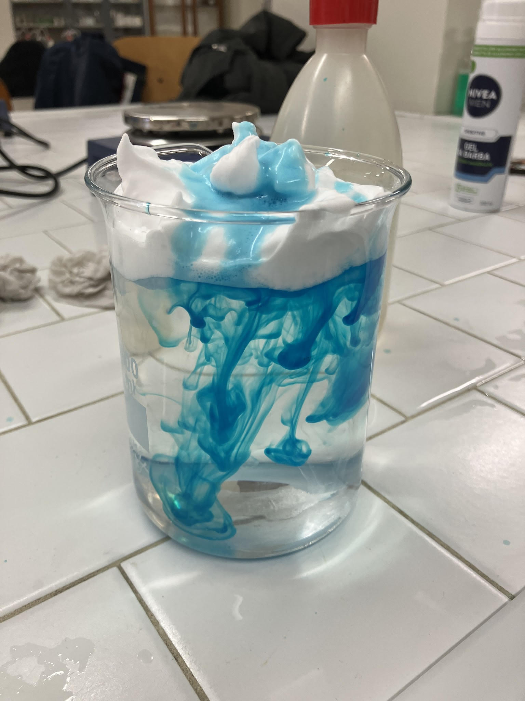
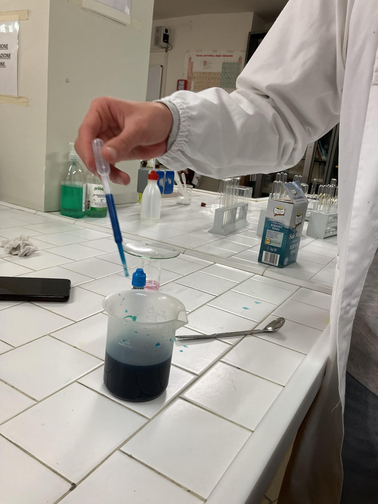
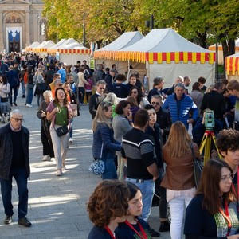

Bergamo Scienza

lightbulb L'Esperienza
L'attività è stata focalizzata sull'ideazione, la progettazione e la replica di esperimenti scientifici interattivi. Divisi in team di lavoro, abbiamo analizzato diverse risorse per selezionare gli esperimenti più d'impatto e sostenibili dal punto di vista economico, ideando tra gli altri il progetto della "Pioggia nel barattolo".
experiment Sviluppo Tecnico

Ottimizzazione
Attraverso una fase di ricerca individuale e successivi test pratici di laboratorio, abbiamo ottimizzato l'esperimento (regolando la densità dei fluidi tramite cloruro di sodio e coloranti e sfruttando le differenze termiche). Abbiamo inoltre realizzato strumenti di supporto come chiavi dicotomiche in cartone.

Divulgazione
Il percorso si è concluso con la redazione di un copione condiviso e la presentazione pratica dei progetti. L'obiettivo finale è stato l'allestimento di stand scientifici in piazza, spiegando i fenomeni chimico-fisici in modo accessibile a studenti, docenti e cittadini.